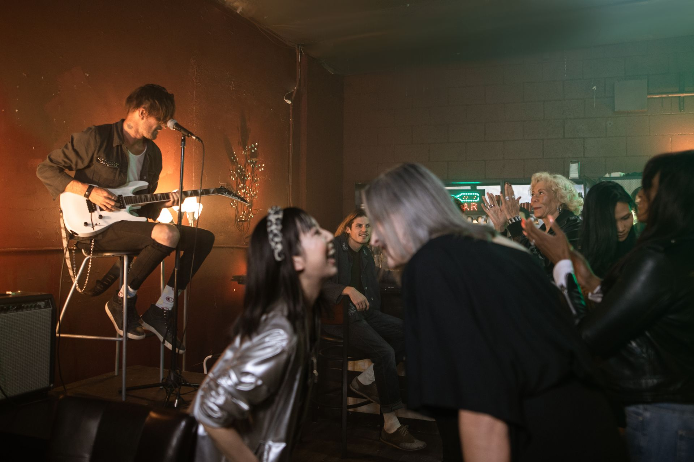

You fill rooms already. Now get paid like it.
Your followers are not spread across the internet. They live here, and they show up. On SIGNL, venues and brands book local musicians the way they book local creators: paid at your own rate, you keep 97 percent, or a comped night with your crew. Both lanes, stated up front, every time.

Local crowds.
The deal, up front. Paid bookings pay your rate, you keep 97 percent, and the money is held safely until your post is live. Comped bookings trade the visit and the post for the night itself. Either way: one post, one story, no endless revisions, and your songs are never part of the deal.
Free to join, forever. 97% of your rate is yours. Paid when your post goes live.
Built for the working musician
Your audience is local
Streaming pays in fractions. Your real leverage is the room: the people within driving distance who come out on a Friday. SIGNL ranks you by local audience share, the share of your followers who live in your market, so a tight local following beats a big scattered one.
Venues book the night
Bars, restaurants, hotels and brands post bookings in the app: the night, the set or appearance, and the pay or the comp. You accept the ones you want and pass on the rest. No agent, no cold DMs, no playing for exposure you did not choose.
You play, you post, you get paid
After the night you post the Standard Visit: 1 post or reel plus 1 story that shares it, within 48 hours, disclosed. On a paid booking the business already paid up front, and the money releases to you when the post goes live. No invoices. No Net 90.
What musicians get booked for
Live music nights
A set on a slow weeknight or the Friday headline slot. The venue fills its room; you fill your calendar.
Openings and launches
Grand openings, menu drops, product launches and reopenings want a crowd with a pulse. You are the pulse.
Game days and events
Watch parties, fight nights, festivals and holiday weekends, booked like any other visit on the platform.
- Solo and duo sets
- Full band nights
- DJ sets
- Residency runs
- Dinner sets
- Rooftop and patio nights
- Private parties
- Brand events
Every booking is the same simple shape: play or appear, then post the Standard Visit. No new offer types, no side deals to negotiate.
Book local musicians the same way
Pick by local pull
Browse musicians in your market and see the number that matters: how much of their audience actually lives here and can walk through your door.
One booking covers it
A paid booking is the musician's rate plus 3 percent, or offer a comped night instead. The post about the night is part of the booking, tracked like every visit on SIGNL.
Covered if it falls through
The Visit Guarantee stands behind every booking: if the musician does not show or does not post, the visit is replaced and does not count against your plan.
Founding business plans run $199, $349 or $699 a month with $100 off the first month. See how businesses use SIGNL →
Where a city runs on live music, the rooms that win book it like a system: a bench, a rotation, and proof every night worked. Each music-first city gets its own bench here as it launches.
Broadway has tourists. You have Tuesday.
Broadway never wonders if the band is coming. Now your room does not have to either. SIGNL keeps a small bench of local musicians on rotation for Nashville restaurants and bars, so your calendar fills itself, your slow nights get a stage, and every night comes with proof it worked.
Book the bench
For restaurants and bars: pick your nights. We match four to six local musicians to your room and rotate them through your slow nights, your weekends, and your private events. Each one posts before the night. Guests who come in on the post are counted at your register, and the ones who come back are counted too. One musician cancels, the bench covers it.
Join the bench
For musicians: steady rooms beat one-off gigs. Get booked into regular nights at Nashville restaurants and bars, at your own rate, paid the day your post goes live. No booking fee skimmed off your night. Your music stays yours, licensed for the post and nothing more.
Said out loud
No paper sign-up sheet. No Friday panic. No guessing what the music was worth.
Nashville runs on music. Now the whole city can book like it.
Every creator has a front door
Food creators
If your camera eats first, restaurants are already watching. See how food creators turn local taste into comped tables and paid bookings. See the food creators page →
Creator moms
Family tables, weekend plans and the group chat that decides them. See the offers built for parents, with the comp stated up front. See the creator moms page →
Creator dads
Grills, garages, game days and the family calendar. See the local businesses looking for exactly your kind of post. See the creator dads page →
Students
Campus is a neighborhood with better stories. See how student creators turn the places they already go into comps and first paid work. See the students page →
Every creator
The full picture: tiers, rules, Momentum points and the application. Start here if you want the whole system in one read. See the creators page →
Musicians and venues, answered
I am a musician, not an influencer. Does this fit me?
Yes. On SIGNL a musician is a creator whose audience lives in one city. If people near you follow you and come to your shows, venues and brands want exactly that. You join in the Music category, free, at any follower count, and businesses book you by local audience share, not by follower count.
How does a booking actually work?
A venue or business posts a booking: the night, the set or appearance, and the pay. You accept the ones you want. You play, and you post the Standard Visit about the night: 1 post or reel plus 1 story that shares it, within 48 hours, disclosed. The booking, the visit and the post are all tracked in the app.
What do I get paid, and when?
You set your rate, from $50, and you keep 97 percent of it. The business pays up front, SIGNL holds the money until your post is live, then releases it. No invoices and no Net 30, 60 or 90 day chasing. If the night or the post never lands, the business is refunded in full.
Is it only paid, or are there comped gigs too?
Both lanes are always open. Some venues book paid sets at your rate. Others offer a comped experience: a night out, a meal, a tab for you and your crew, in exchange for the visit and the post. You see exactly what is offered before you accept, and you only take the gigs you want.
Who owns my music and my posts?
You do. Your songs and recordings are never part of any deal on SIGNL. A paid booking includes one standard license covering the post itself: 90 days of repost and ad use by the business. Nothing is taken in perpetuity, and licensing anything beyond that is a separate request you approve, at a fee you list.
I run a venue. What does it cost to book musicians here?
A founding business plan: $199, $349 or $699 a month depending on visits, with $100 off the first month and no per-location charge. On top of that, a paid booking costs the musician's rate plus 3 percent. Comped bookings cost the comp you offer. Every booking is covered by the Visit Guarantee: if the musician does not show or does not post, the visit is replaced and does not count against your plan.
What if a gig falls through?
Flag it in the app before the window closes. A visit you flag in time does not count against you, on either side. Going silent is what hurts: a no-show with no post costs standing, and for the business the Visit Guarantee replaces the visit.
Your next gig is in your city.
Founding rosters are forming in 38 markets. Join free in the Music category and be on the roster when venues near you start booking.
Sign-ups live in the SIGNL app
Create your account and build your founding profile in a few minutes: your market and home city, your handles, your tier band and the music you play. It is free, and it always will be for creators.
Already signed up? Sign in at app.joinsignl.com